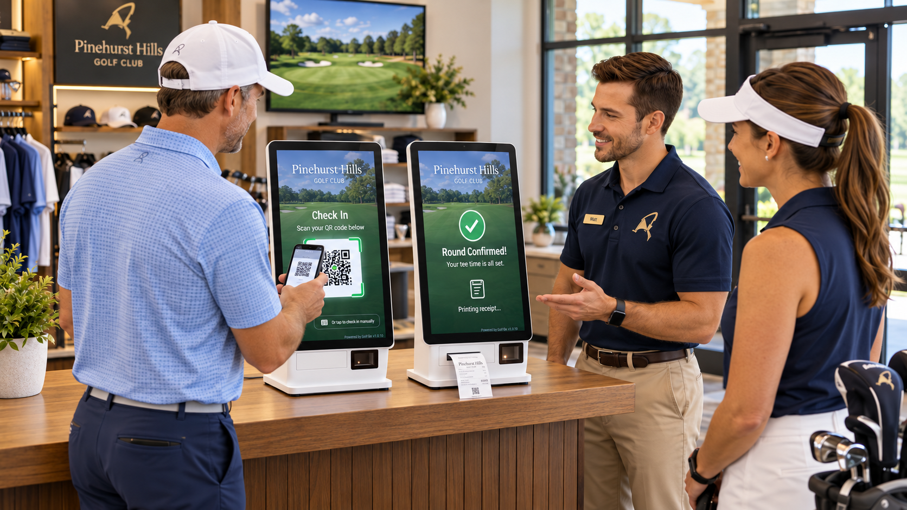

Four booking channels
App, national hotline, AI missed-call booking and kiosk.
Golfer-growth system for golf courses
GolfGo connects a growing golfer network with course-approved tee times—then makes booking, payment and check-in simple.
Live-course experience · Existing tee-sheet compatible · Course payments remain direct
App, national hotline, AI missed-call booking and kiosk.
GolfGo works alongside the system and process you already use.
Your course sets availability, pricing and the guest experience.
GolfGo does not hold your course’s green-fee revenue.
How GolfGo creates new bookings
Every channel turns golfer demand into a reservation on tee times your course has made available.
Reach a growing network of more than 30,000 registered golfers built through live-course operations.
Golfers call our AI-assisted hotline to find and reserve an available tee time.
1-855-8TEETIMEWhen staff cannot answer, GolfGo follows up, finds an available tee time and completes the reservation—including after hours.
GolfGo-booked golfers scan, pay and check in without staff assistance. Cash or gift-card payments are handled by staff.
See GolfGo in action
Watch how GolfGo supports booking, call recovery and fast self-service arrival while working alongside the course team.
Validated at live courses
GolfGo has been refined through real operating conditions—not just a laboratory demonstration.
*Typical combined GolfGo-attributed results after approximately one year live. Actual performance varies by course. Performance figures shown in the video are based on GolfGo’s historical operating experience at live golf courses.

Dedicated GolfGo kiosk
One dedicated GolfGo kiosk is provided at no cost for GolfGo-booked golfers.
Independent check-inScan the reservation QR code, pay and check in without staff assistance.
Clear exceptionsCourse staff assists only when a golfer uses cash or a gift card.
Another reservationAfter check-in, golfers can book another round at your course.
No monthly platform feeA second kiosk may be considered based on booking volume and course needs.
How GolfGo works with your course
See the complete golfer-to-booking and check-in process.
Identify available tee times, pricing and operating rules.
The app, hotline and AI Missed-Call Booking begin bringing golfers.
One no-cost kiosk provides fast scan-and-go check-in for GolfGo-booked golfers.
Monthly reports show GolfGo bookings, golfers and attributable revenue.
Preferred Course Partner
Participating courses receive preferred placement in GolfGo recommendations. The course determines availability, pricing, discount rules and eligible times—and may change those rules at any time.
Next step
A focused live demonstration will show how golfer demand becomes attributable bookings and completed check-ins.